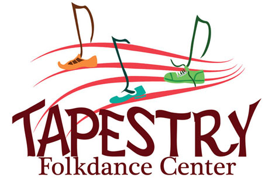

Martha Megarry
Address: 3641 Bryant Ave S Minneapolis MN, 55409
Phone: 612-715-4393
Email: mega0015@umn.edu
Education/Professional Development
University of Minnesota: Twin Cities (U of M) May 2012
- BA: Linguistics
- Minor: Entomology
- Study Abroad: Arranged my own volunteer experience through World Wide Opportunities on Organic Farms in Finland Summer 2011
Word Up! Minneapolis Wordpress Conference at MCTC October 2013 and 2014
Metropolitan Regional Arts Council: Social Media like the Big Dogs workshop September 2013
Minnesota Webdesign Meetup Member November 2013-present
Computer Skills
-
Adobe Suite (Photoshop, Illustrator, InDesign, Dreamweaver, beginning Premier Pro)
-
Microsoft Office (Word, Excel, Powerpoint, Outlook, Access)
-
Content Management Systems (Joomla, WordPress, Scalar)
-
HTML Email Newsletters (Vertical Response)
-
Experience using differnt Operating Systems (PC, Mac and iOS)
- Code Languages (HTML and CSS)
- Code/text Editors (Notepad++, Sublime Text 2)
- Other: Google Apps, VUE Visual Understanding Environment, Windows Movie Maker
Professional Experience: Code and Web

Tapestry Folkdance Center
Marketing and Technical Assistant
March 2013-Present
- Designed and built the new Tapestry website using Wordpress with a child theme and redesigned logo
- Researched and purchased new computer hardwear for the office
- Day to day work includes coordinating space rentals, updating the website and studio calendar, creating the weekly e-newsletter, troubleshooting/helping other staff with technology problems and designing print fliers
North Psychology Clinic
Freelance Contractor
November 2014-Present
- Moving the hosting and transfering the domain of the North Psychology website to a new server and provider
- Updating the website to fix messed up code and add more content and functionality
- Designing a e-newsletter for the clinic
U of M Sociology Department: Food and Society Collaboratory
Research Assistant
January 2014-Present
- Remade the AgriFood Reading Group's webpage following the style designated by the U of M Institute for Advanced Study
- Designed logos for the U of M Real Food Challenge chapter
- Currently I am analyzing data from Professor Valentine Cadieux's research projects on people's perceptions of the food system and how they think it should change and am working on a Wordpress site for her Uncomfortable Dinner Party project
Professional Experience: Other
Minneapolis Parks and Recreation: Theater Nest Program
Teacher June 2009-April 2014 Assistant Teacher June 2004-May 2009 Student June 1998-May 2004
- Tought theater, visual art and dance to children aged 4-18
U of M Bee Lab
Lab Assistant November 2010-August 2011
- Performed and documented experiments with bumble bees and honey bees to test the effects of pesticides
U of M Philosophy Camp (PHIL4326 Lives Worth Living: Questions of Self Vocation and Community)
Student Advisor/Apprentice Instructor January 2010- June 2010
- Recruited students, organized orientation, developed curriculum with instructor team for 4 week off-campus course and taught as a TA during the course
Other Interests